在真实世界的电子设计中测试 Claude
📖 中文摘要
专业术语注解
印刷电路板（PCB）：安装并连接电子元件的板，设计需安排元件位置与铜走线几何推理：决定元件摆放与走线走向、并预判制造约束的空间推演能力布线器（router）：在板上的两点间自动绘制铜走线的工具，Claude曾自行编写一个DFM可制造性检查：把设计几何与工厂制造极限对照，确保设计能真正量产固件（firmware）：写入硬件、控制设备运行的底层软件📄 中文全文
- 类别： 科学（Science）
- 来源： https://www.anthropic.com/research/claude-electronics-design
科学（Science） 2026 年 11 月 9 日
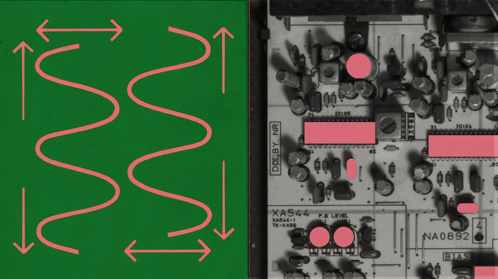
已发布 2026 年 11 月 9 日 团队 科学 大约一年多前，我们开始测试 Claude 设计基础电子电路的能力。我们与 Diode Computers 合作¹——这是一家设计和制造电路板的公司——用一些简单任务来训练 Claude，例如阅读芯片的数据手册（datasheet），并弄清芯片运行需要哪些外围元件。当时我们试验的模型还无法可靠地完成电路板布局，也难以设计出彼此配合的元件。如今，Claude 已经能够从头到尾设计电子硬件并做出原型。 设计一台电子设备需要梳理许多复杂步骤和现实约束。你不仅要设计和仿真电路板，还要推敲电路板的物理布局及其行为表现，为机械部件建模，并编写固件（firmware）——与此同时，还得随时掌握哪些元件容易采购、工厂具备什么样的生产能力。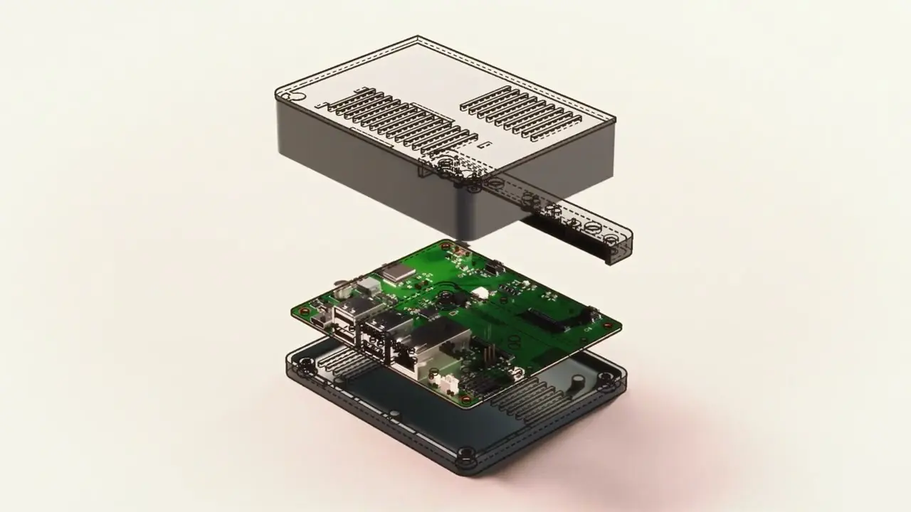
为了看看更新的 Claude 模型在这一领域有多大进步，我们再次与 Diode 合作，这一次让 Claude Fable 5.2 设计三台电子设备：一台扬声器电话、一台语音助手中枢和一只手持虚拟宠物。在极少提示的情况下，Claude 就能运用几何推理来布置每块电路板，预判制造约束，并确保自己的设计在这些约束下仍能正常工作。它会反复修改自己的成果，在计算机辅助设计（CAD）软件中为设计建模，最后指导人类工程师做出原型——这些原型无需对电路做任何修改就能正常工作。 每一项设计，我们都从给 Claude 一段简单的提示开始，说明要造什么样的设备以及主要的硬件要求。例如，扬声器电话的提示要求"一个通过 USB-C 接入电脑的圆形小装置，内含麦克风和扬声器，用 PCB 天线支持蓝牙"。随后 Claude 着手编写设备规格、绘制清晰直观的原理图、决定元件在印刷电路板（PCB）上的位置、布设元件之间的铜走线、设计可 3D 打印的外壳、编写固件，并准备物料清单。在 Claude 的指导下，Diode 组装了电路板并运行了固件。最终成果是一台扬声器电话原型，使用数周后依然正常工作。 Claude 用类似的流程制作了语音助手中枢和虚拟宠物，两者目前也都运行良好。由于这些设备还只是早期原型，我们尚不知道它们在持续使用下能保持多久，也不清楚它们能否通过商用认证。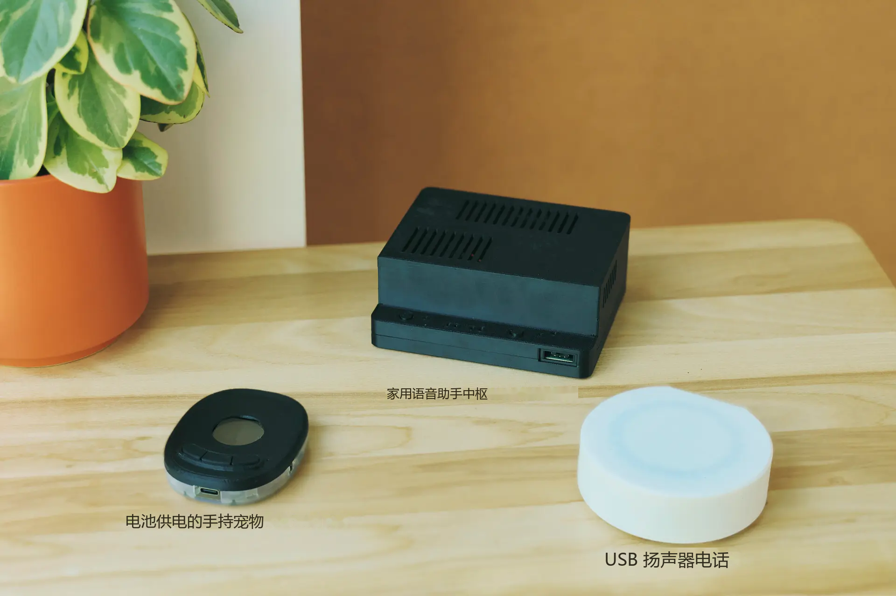
按 Claude 的设计制造出的三台设备，从左到右依次是：一只电池供电的手持宠物、一台家用语音助手中枢和一台 USB 扬声器电话。Claude 为每一台设计了电子部分和外壳，并编写了固件。通过几何问题进行推理
Fable 5.2 与我们在早期测试中使用的模型之间最实质的差别，在于 Fable 5.2 推演复杂几何问题的能力，比如在电路板上把元件放在哪里、如何在它们之间布设铜走线。 早期模型很难决定基础元件该如何排布——例如把外围支持元件放得离它们所服务的芯片太远，或者把连接器的朝向弄反。相比之下，Fable 5.2 给出的布局更紧凑、更实用。它优先布设最重要的连接：承载高速信号或大电流的线路，以及对噪声敏感的线路。例如，在语音助手中枢上，Claude 先布设 USB 和以太网连接，这些连接沿着成对的走线传输信号——走线是电路板上细长的铜条。它一次只布一对走线，让每对中的两条走线保持相同长度和正确间距。它还加入了调谐图案（tuning patterns）——一些小小的锯齿，用来延长某条走线，使信号同时到达——并重新安排电源部分的元件以提高效率。 为了展示 Fable 5.2 在电路板布局上比早期模型强多少，我们请 Diode 运行 PCB Gym——这是一个内部基准，根据模型在布局被抹去的电路板设计上放置元件、重新布线的表现来打分。Fable 5.2 在该基准上得到 69%，而 Fable 5 只有 25%（图 2）。它在 BenchCAD 2.1 上表现也更好——这是一个公开基准，测试模型能否根据工程图纸和渲染图像重建 3D 零件、装配体和电路板。Fable 5.2 得到 83.5%，几乎是其前身 Claude Fable 5.1 得分的两倍。
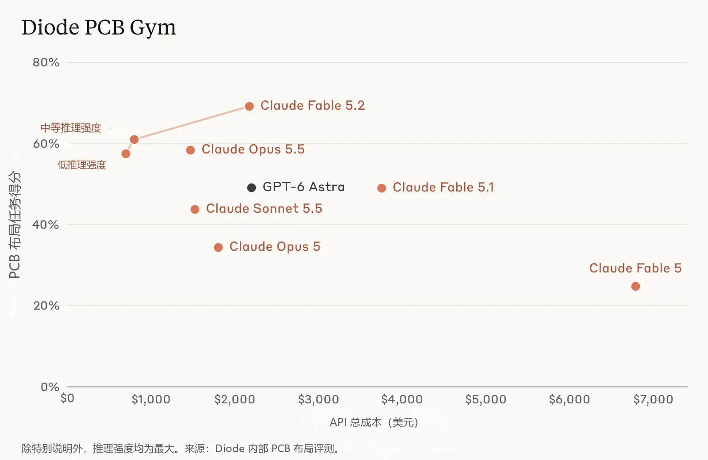
近期前沿模型在 Diode PCB Gym 上的得分与总 API 成本的关系图。该基准要求模型在布局被抹去的电路板上放置元件并布设连接。反复修改设计
早期模型在设计 PCB 布局时很少修改自己的成果，即使已经明显看出，按它们的放置选择根本不可能完成布线。过去一年里，Diode 用这些模型设计了许多完成度已达 95% 却依然无法使用的板子。 当 Claude 发现自己的某个设计行不通时，它会在没有人提示的情况下主动改变方向。例如，在设计有四层铜箔的扬声器电话电路板时，它把信号重新分配到两颗芯片上不同的引脚。这样一来，扬声器电话触控区域下方的走线就能留在单层内而互不交叉。后来，当板子背面变得过于拥挤时，Claude 交换了可互换引脚上的信号，并把板子的一整角重新布局了一遍，而不是靠增加层间跳线来打补丁。 在为语音助手中枢的设计文件布设走线时，Claude 发现铜连接"乱到没法用眼睛追踪"，于是推理道："我应该干脆把这些走线（traces，也叫 tracks）撕掉重来。"它随之删除并重新布设了数十次铜连接，直到找到可行的排布。
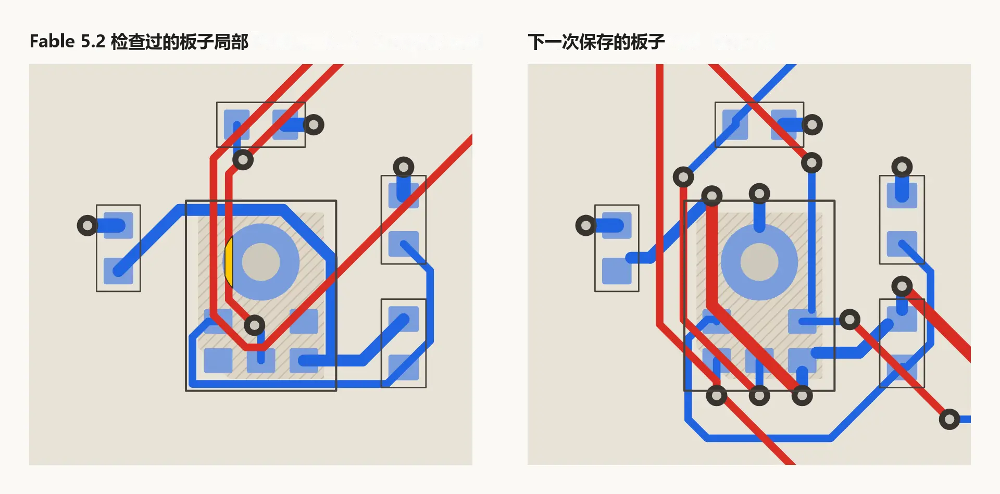
Claude 重新整理连接前后，语音助手中枢的走线。左图：麦克风的电源走线（蓝线）在拾音孔处的接地环上绕行，一条正面走线（红线）穿过该环，而一个过孔（via，连接各铜层的小孔）落在麦克风的焊盘之间。右图：Claude 重新布设电源走线后的同一区域，接地环已清空并完成接地。Claude 重做左图版本的理由："在底部拾音孔 MEMS 麦克风下方这样布置有风险，即便间距在技术上没问题，所以我想把两个相同麦克风封装的局部走线都干净地重做一遍。"使用软件与文档
当某台设备的设计决策取决于某个特定元件的细节时，Claude 常会去查该元件的数据手册——由制造商发布的技术文档。当被问及手持宠物在没有电池的情况下能否工作时，Claude 阅读了充电芯片的数据手册，回答说它可以靠 USB 供电运行，但预测充电指示灯会闪烁，因为充电器会不断给电池位置上的一个小电容反复充电。² 为了在语音助手中枢上布设连接，Claude 先用了 Diode 提供的设计软件，该软件让它能运行 KiCad 内置的布线器（router，绘制走线的工具）——KiCad 是一款广泛使用的电路板设计程序。KiCad 的布线器一次只在 Claude 选定的两点之间画一条走线。但中枢上有许多从 100 针连接器引出的长走线，Claude 判断逐条布设需要太多一步一步的指导。 于是，Claude 自己写了一个布线器：一种把板子划分成网格、并在网格中搜索为每条走线找出畅通路径的算法。大约半小时内，Claude 就做出了一个能用大约一秒钟布好每条长走线的布线器。当 Claude 发现一条音频时钟走线离以太网走线太近时，它调整了布线器，在敏感走线周围留出更多余量。
跟踪约束与下游影响
设计某一处做出的决定会产生下游影响，Claude 一直跟踪着这些影响。在为每台设备设计外壳时，它编写代码检查电路板的 3D 模型能否装进外壳而没有任何元件发生碰撞。例如，它发现扬声器电话的板子不能笔直地放进外壳，因为静音开关会撞到后壁。Claude 算出，如果在安装时把板子倾斜大约 25 度，就能放进去。它在 3D 模型中验证了这一点，并把这一步加进了装配说明。
在为语音助手中枢设计外壳时，Claude 算出一条 25 毫米长的麦克风拾音通道——让声音到达麦克风的开孔——会在 3.4 kHz 附近产生共振。"这正好落在人声频段里，"它推理道，"虽然不算理想，但对语音助手来说还能用。更好的办法是做成楔形外壳，后部高、前部低，呈阶梯式下降。"楔形把通道缩短到大约 10 毫米，把共振频率提高到大约 8.9 kHz，正好位于语音所用频段的边缘。Claude 还为扬声器电话编写了固件：随着声音变响，环形 LED 灯会变暗，从而让设备不超过 Claude 在板子上设定的电流上限。
 Claude 为家用语音助手中枢做的设计，以及完成的原型。Claude 编写了在 CAD 中建模外壳的代码、完成了电路板布局，并编写了固件。
Claude 为家用语音助手中枢做的设计，以及完成的原型。Claude 编写了在 CAD 中建模外壳的代码、完成了电路板布局，并编写了固件。
面向真实制造的设计
在电子设计中，工程师必须在现实世界的约束下工作。也就是说，他们得确保工厂真的能把自己想造的东西造出来。为此要跑两类检查：可制造性设计（DFM）检查，把电路板的几何形状与工厂的制造极限对照；以及采购（sourcing）检查，确认经销商手里有现货。 Claude 自己运行了这些检查，并把结果分成需要修复的问题和可以忽略的告警。它对语音助手中枢的检查把六条细长的阻焊层（solder mask，电路板上的保护涂层）标记为太薄、无法制造。Claude 通过加宽阻焊层上的开口修好了它们，没有移动任何元件。检查还把两个地（ground，电流的共用回流路径）之间的一处连接报为错误，因为自动检查器没有识别出这处连接是有意设计的。Claude 正确地推理出它不会影响性能，于是忽略了该告警。 Diode 直接依据 Claude 的设计文件制造了全部三块板子，没有就调整来回沟通。工厂和工程师往往要经历多轮制造变更，Diode 团队告诉我们，他们很惊讶用 Claude 时完全不必如此。
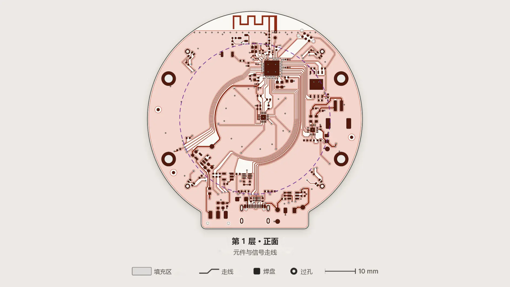
扬声器电话的四层铜箔。虚线圆圈标出触控轮，那里的铜电极会感知用户的手指。把一条走线从一层移到另一层，需要在板子上钻孔；而在触控轮下方，这个孔会穿过一个电极。为避免这一点，Claude 让轮下的每条信号走线都留在单层内，并挑选芯片的引脚分配，使这些走线不必彼此交叉。它还在每一层都让蓝牙天线（顶部的锯齿形）周围保持没有其他铜箔和孔洞，以免附近的金属削弱信号。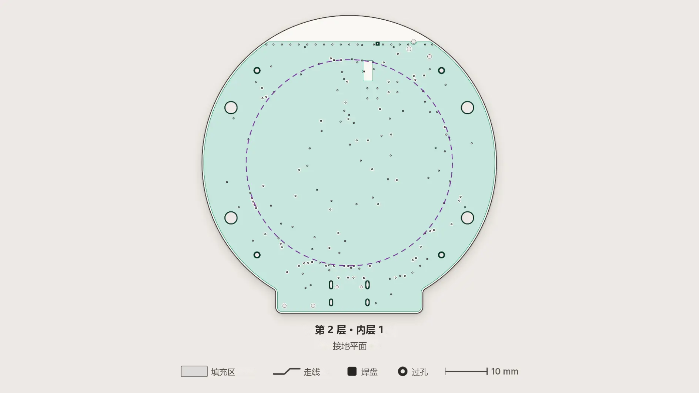
扬声器电话的四层铜箔。虚线圆圈标出触控轮，那里的铜电极会感知用户的手指。把一条走线从一层移到另一层，需要在板子上钻孔；而在触控轮下方，这个孔会穿过一个电极。为避免这一点，Claude 让轮下的每条信号走线都留在单层内，并挑选芯片的引脚分配，使这些走线不必彼此交叉。它还在每一层都让蓝牙天线（顶部的锯齿形）周围保持没有其他铜箔和孔洞，以免附近的金属削弱信号。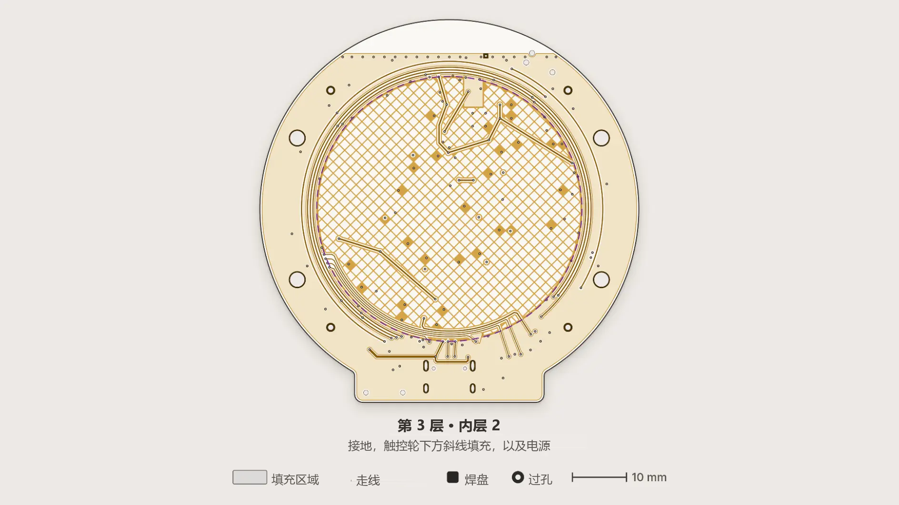
扬声器电话的四层铜箔。虚线圆圈标出触控轮，那里的铜电极会感知用户的手指。把一条走线从一层移到另一层，需要在板子上钻孔；而在触控轮下方，这个孔会穿过一个电极。为避免这一点，Claude 让轮下的每条信号走线都留在单层内，并挑选芯片的引脚分配，使这些走线不必彼此交叉。它还在每一层都让蓝牙天线（顶部的锯齿形）周围保持没有其他铜箔和孔洞，以免附近的金属削弱信号。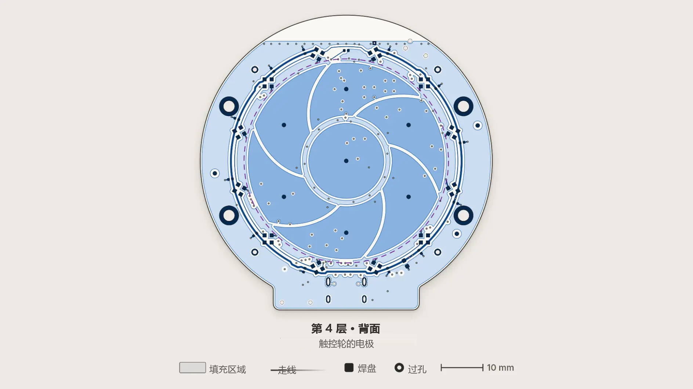
扬声器电话的四层铜箔。虚线圆圈标出触控轮，那里的铜电极会感知用户的手指。把一条走线从一层移到另一层，需要在板子上钻孔；而在触控轮下方，这个孔会穿过一个电极。为避免这一点，Claude 让轮下的每条信号走线都留在单层内，并挑选芯片的引脚分配，使这些走线不必彼此交叉。它还在每一层都让蓝牙天线（顶部的锯齿形）周围保持没有其他铜箔和孔洞，以免附近的金属削弱信号。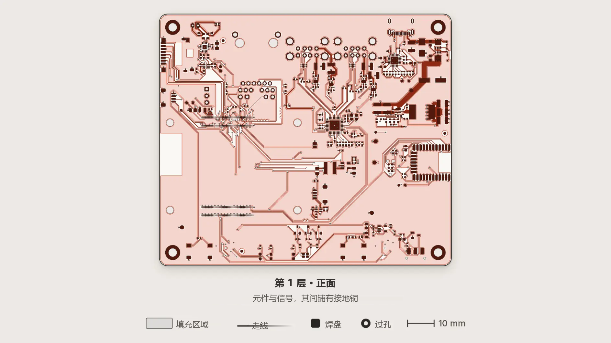
语音助手中枢的四层铜箔。Claude 在电源层（绿色）上加入了两块接地铜区域，正对着板子背面大多数承载高速信号的走线。这为信号提供了就近的回流路径，有助于减少干扰。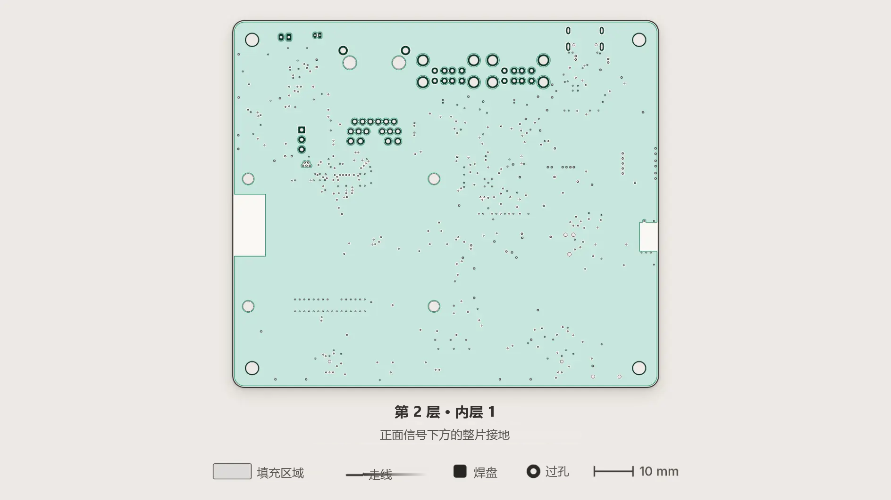
语音助手中枢的四层铜箔。Claude 在电源层（绿色）上加入了两块接地铜区域，正对着板子背面大多数承载高速信号的走线。这为信号提供了就近的回流路径，有助于减少干扰。 语音助手中枢的四层铜箔。Claude 在电源层（绿色）上加入了两块接地铜区域，正对着板子背面大多数承载高速信号的走线。这为信号提供了就近的回流路径，有助于减少干扰。
语音助手中枢的四层铜箔。Claude 在电源层（绿色）上加入了两块接地铜区域，正对着板子背面大多数承载高速信号的走线。这为信号提供了就近的回流路径，有助于减少干扰。
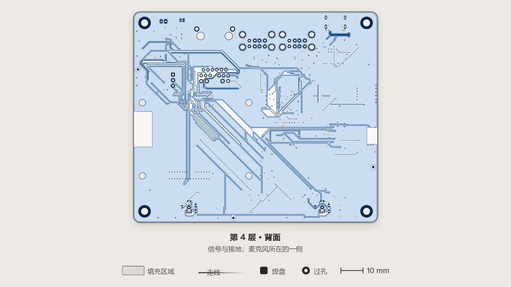
语音助手中枢的四层铜箔。Claude 在电源层（绿色）上加入了两块接地铜区域，正对着板子背面大多数承载高速信号的走线。这为信号提供了就近的回流路径，有助于减少干扰。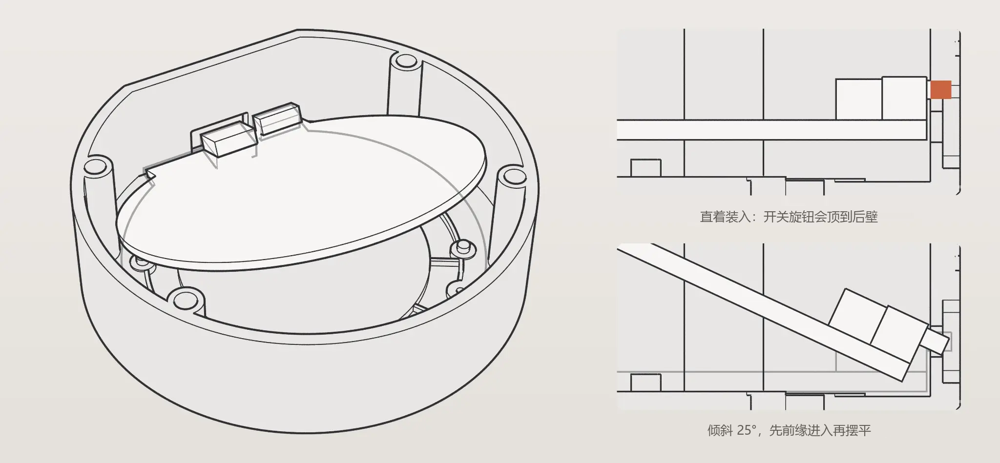
扬声器电话的电路板不能笔直地放进外壳，因为静音开关的旋钮会撞到后壁（红色）。Claude 想出了安装办法：先把板子倾斜大约 25 度，再把它摆平，并把这一步加进了装配说明。局限与下一步
这三台设备仍然都只是原型：它们还没有经过电气验证、天线调谐、热测试或认证，也不是为量产而设计的。由于 Claude 没有连接到测试设备，也没有连接到制造和组装电路板的机器，Diode 的工程师必须亲手搭建并测试这些原型。即便如此，过去一年里，Claude 在推演元件放置与布线决策方面已有长足进步，如今它能在极少人工指导下设计电子产品，并帮助人们做出原型。其他模型在这一方向上也在取得进展：OpenAI 最近撰文介绍如何使用其模型设计一款手持设备。这类工作有望帮助工程师更快地构建和测试新的硬件设计。 接下来，我们打算研究 Claude 能否设计更密集、更快、更复杂的板子，在仿真中检验它们，并从成品设备上测得的数值中学习。
脚注
01 Anthropic 与 Diode 存在商业合作关系。 02 这是 Diode 团队少数几次主动给 Claude 提示的例子之一（"如果没有电池，它还能工作吗？"）。总体而言，他们的提示极少，且仅限于简短指令（例如"整理一下原理图"和"继续"）。
作者与致谢
致谢
本文由 Anthropic 的研究员与工程师合作完成，包括 Mike Cretella、Connor Jennings、Brent Yi，以及 Craig Chen 和 Diode Computers 团队。自 2025 年起，Anthropic 就与 Diode 的电气工程师在 PCB 设计上展开合作。编辑支持来自 Xander Balwit、Tom Chivers、Rebecca Hiscott 和 Caitlin Love。
▸ 英文原文（点击展开）
Testing Claude on real-world electronics design
- Date: 2026-11-09
- Source: https://www.anthropic.com/research/claude-electronics-design
Testing Claude on real-world electronics design
Published
Nov 9, 2026
Team
Science
A little over a year ago, we began testing how well Claude could design basic electronic circuits. We collaborated with Diode Computers,1 a company that designs and manufactures circuit boards, to train Claude on simple tasks—for example, on reading a chip’s datasheet and working out which parts a chip needs in order to run. The models we experimented with back then couldn’t reliably lay out a circuit board; they also struggled to design components that fit together. Now, Claude can both design and prototype electronic hardware from start to finish.
Engineering an electronic device requires working through many complex steps and practical constraints. You have to not only design and simulate a circuit board, but also reason about the board’s physical layout and how it will behave, model the mechanical components, and write firmware—all while keeping track of which parts are readily available and what a factory is set up to build.
To see how newer Claude models have improved in this area, we collaborated with Diode again, this time asking Claude Fable 5.2 to design three electronic devices: a speakerphone, a voice-assistant hub, and a handheld virtual pet. With minimal prompting, Claude was able to use geometric reasoning to lay out each circuit board, anticipate manufacturing constraints, and make sure its designs would work within them. It revised its own work, modeled its designs in computer-aided design (CAD) software, and, finally, directed human engineers to build prototypes that worked without any fixes to their circuitry.
For each design, we began by giving Claude a simple prompt that outlined what kind of device to build and its main hardware requirements. The prompt for the speakerphone, for example, asked for “a puck that plugs into a computer over USB-C and includes microphones and a speaker, supporting Bluetooth with a PCB antenna.” Claude proceeded to write the device’s specifications, draw clean visual schematics, choose where to place the components on a printed circuit board (PCB), route the copper connections between them, design a 3D-printable enclosure, code the firmware, and prepare a parts list. Diode assembled the circuit boards and ran the firmware, under Claude’s direction. The final result was a prototype of a speakerphone that still works after weeks of use.
Claude went through a similar process to build the voice-assistant hub and the virtual pet, and both are also still in good working order. Because the devices are early prototypes, we don’t yet know how they’ll hold up with continued use or whether they would pass commercial certifications.
 The three devices built from Claude’s designs, from left to right: a battery-powered handheld pet, a home voice-assistant hub, and a USB speakerphone. Claude engineered the electronics and the enclosures and wrote firmware for each one.
The three devices built from Claude’s designs, from left to right: a battery-powered handheld pet, a home voice-assistant hub, and a USB speakerphone. Claude engineered the electronics and the enclosures and wrote firmware for each one.
Reasoning through geometric problems
The most substantial difference between Fable 5.2 and the models we used in our earlier tests was in how well Fable 5.2 reasoned through complex geometric problems, such as where to place components on a circuit board and how to route the copper connections between them. Earlier models had struggled to decide how to arrange basic components—placing supporting parts too far from the chips they served, for example, or orienting connectors incorrectly. Fable 5.2, by contrast, produced more compact, practical layouts. It routed the most important connections first: those that carry high-speed signals or high currents, or that are sensitive to noise. For example, for the voice-assistant hub, Claude started by routing the USB and Ethernet connections, which transmit signals along pairs of tracks—thin strips of copper on the board. It routed one pair of tracks at a time, keeping the two tracks in each pair the same length and correctly spaced. It also added tuning patterns—small zigzags that lengthen a track so that signals arrive at the same time—and arranged the parts of the power supply to make it more efficient. To demonstrate how much better Fable 5.2 is than earlier models at laying out circuit boards, we asked Diode to run PCB Gym—an internal benchmark that scores models based on how well they can place components and reroute connections on board designs whose layouts have been removed. Fable 5.2 scored 69% on the benchmark, compared with 25% for Fable 5 (Figure 2). It also performed better on BenchCAD 2.1, a public benchmark that tests whether models can rebuild 3D parts, assemblies, and circuit boards from engineering drawings and rendered images. Fable 5.2 scored 83.5%, nearly double the score of its predecessor, Claude Fable 5.1.
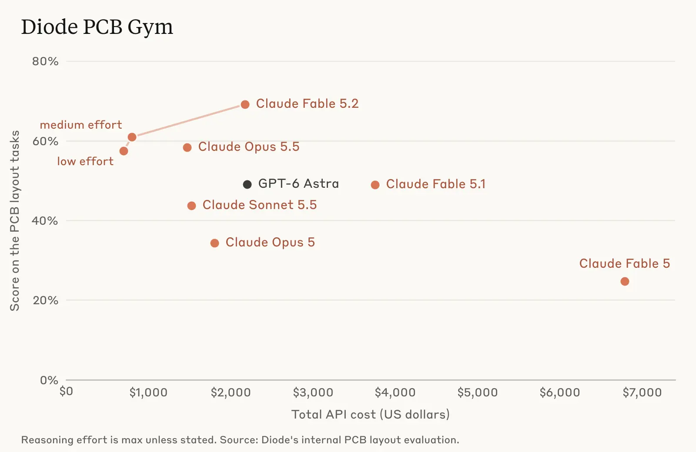
Scores plotted against total API cost for recent frontier models on Diode PCB Gym, a benchmark that instructs models to place components and route connections on circuit boards whose layouts have been removed.Revising designs
Earlier models rarely revised their own work when designing PCB layouts, even when it became clear that their placement choices would never let them finish routing the connections. Over the past year, Diode designed many boards with these models that were 95% complete but still unusable.
When Claude noticed one of its designs wasn’t working, it would change course without being prompted to do so. For instance, when designing the speakerphone’s circuit board, which has four layers of copper, it reassigned signals to different pins on two of the chips. This allowed the tracks under the speakerphone’s touch-sensitive controls to stay on a single layer without crossing one another. Later, when the back of the board became too crowded, Claude swapped the signals on interchangeable pins and laid out a whole corner of the board again, rather than patching the problem with extra jumps between layers.
And when placing tracks in its design file for the voice-assistant hub, Claude noticed that the copper connections were “getting too tangled to trace visually” and reasoned, “I should just rip these traces [tracks] and start fresh.” It proceeded to delete and reroute copper connections dozens of times until it found an arrangement that worked.
 The routing for the voice-assistant hub before and after Claude reorganized the connections. Left: the microphone’s power track (blue lines) loops around the ground ring at the sound port, a front-side track (red) crosses the ring, and a via—a small hole that connects layers of copper—is placed between the microphone’s pads. Right: the same area after Claude rerouted the power track, with the ring clear and grounded. Claude’s reasoning for redoing the version on the left: “That’s risky placement under a bottom-port MEMS mic, even if clearance is technically fine, so I want to redo the local routing cleanly for both identical mic footprints.”
The routing for the voice-assistant hub before and after Claude reorganized the connections. Left: the microphone’s power track (blue lines) loops around the ground ring at the sound port, a front-side track (red) crosses the ring, and a via—a small hole that connects layers of copper—is placed between the microphone’s pads. Right: the same area after Claude rerouted the power track, with the ring clear and grounded. Claude’s reasoning for redoing the version on the left: “That’s risky placement under a bottom-port MEMS mic, even if clearance is technically fine, so I want to redo the local routing cleanly for both identical mic footprints.”
Using software and documentation
When a design decision for one of the devices depended on the details of a particular part, Claude often checked that part’s datasheet—a technical document published by the manufacturer. When asked whether the handheld pet would work without a battery, Claude read the charger’s datasheet and answered that it would run on USB power but predicted that the charging light would flicker, because the charger keeps recharging a small capacitor in the battery’s place.2 To route the connections on the voice-assistant hub, Claude started with the design software Diode provided, which let it run the router (a tool for drawing tracks) built into KiCad, a widely used circuit board design program. KiCad’s router drew one track at a time between two points Claude chose. But the hub had long tracks running from a 100-pin connector, and Claude judged that routing these one by one would take too much step-by-step guidance. Instead, Claude wrote its own router: an algorithm that divides the board into a grid and searches it to find a clear path for each track. Within about half an hour, Claude had a router that could lay each long track in roughly a second. When Claude spotted an audio clock track running too close to the Ethernet tracks, it adjusted the router to leave more room around sensitive tracks.
Keeping track of constraints and downstream effects
Decisions made in one part of a design have downstream effects, which Claude kept track of. While designing each device’s enclosure, it wrote code to check that a 3D model of the circuit board would fit inside the enclosure without any components colliding. For example, it found that the speakerphone’s board couldn’t be lowered straight into the enclosure, because the mute switch would hit the back wall. Claude worked out that the board would fit if it was tilted by about 25 degrees during installation. It tested this in its 3D model and added the step to the assembly instructions. When designing the enclosure for the voice-assistant hub, Claude calculated that a 25 mm-long microphone port—the opening that lets sound reach the microphone—would resonate near 3.4 kHz. That is “right in the voice band,” it reasoned, “which is not ideal though still usable for voice assistant purposes. A better approach is a wedge-shaped enclosure that’s tall at the rear and steps down low at the front.” The wedge shape shortened the ports to about 10 mm, which raised the resonant frequency to about 8.9 kHz, at the very edge of the range used for speech. Claude also wrote firmware for the speakerphone that dims its ring of LED lights as the audio becomes louder, to keep the device under the electrical current limit Claude had designed into the board.
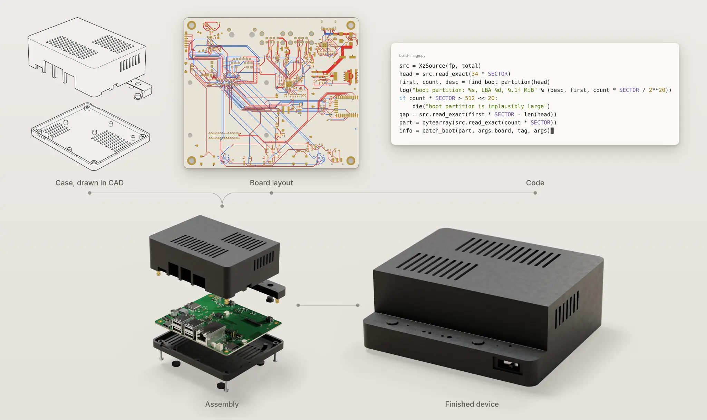
Claude’s designs for the home voice-assistant hub and the finished prototype. Claude wrote the code that modeled the case in CAD, laid out the circuit board, and wrote the firmware.Designing for real-world manufacturing
In electronics design, engineers have to work within the constraints of the real world. That is, they have to make sure a factory can actually make the thing they want to build. They do this by running two kinds of checks: design-for-manufacturing (DFM) checks, which compare a circuit board’s geometry with the factory’s manufacturing limits, and sourcing checks, which confirm that their distributors have the parts in stock.
Claude ran these checks itself and sorted the results into problems that needed fixing and flags it could ignore. Its checks for the voice-assistant hub flagged six slivers of solder mask (the protective coating on a circuit board) as too thin to manufacture. Claude fixed them by widening the openings in the solder mask, without moving any parts. The checks also flagged a connection between two grounds (shared return paths for electrical current) as an error, because the automated checker hadn’t recognized that the connection was deliberate. Claude correctly reasoned that it wouldn’t affect performance and ignored the flag.
Diode manufactured all three boards directly from Claude’s design files, without any back-and-forth over adjustments. Factories and engineers often have to work through multiple rounds of manufacturing changes, and the Diode team told us they were surprised that they didn’t have to do this with Claude.
 The speakerphone’s four copper layers. The dashed circle marks the touch wheel, where copper electrodes sense the user’s finger. Moving a track from one layer to another requires drilling a hole in the board, and under the touch wheel, that hole would go through an electrode. To avoid this, Claude kept each signal track under the wheel on a single layer, and it chose the chips’ pin assignments so that those tracks wouldn’t need to cross one another. It also kept the area around the Bluetooth antenna (the zigzag at the top) clear of other copper and holes on every layer, so nearby metal wouldn’t weaken its signal.
The speakerphone’s four copper layers. The dashed circle marks the touch wheel, where copper electrodes sense the user’s finger. Moving a track from one layer to another requires drilling a hole in the board, and under the touch wheel, that hole would go through an electrode. To avoid this, Claude kept each signal track under the wheel on a single layer, and it chose the chips’ pin assignments so that those tracks wouldn’t need to cross one another. It also kept the area around the Bluetooth antenna (the zigzag at the top) clear of other copper and holes on every layer, so nearby metal wouldn’t weaken its signal.
 The speakerphone’s four copper layers. The dashed circle marks the touch wheel, where copper electrodes sense the user’s finger. Moving a track from one layer to another requires drilling a hole in the board, and under the touch wheel, that hole would go through an electrode. To avoid this, Claude kept each signal track under the wheel on a single layer, and it chose the chips’ pin assignments so that those tracks wouldn’t need to cross one another. It also kept the area around the Bluetooth antenna (the zigzag at the top) clear of other copper and holes on every layer, so nearby metal wouldn’t weaken its signal.
The speakerphone’s four copper layers. The dashed circle marks the touch wheel, where copper electrodes sense the user’s finger. Moving a track from one layer to another requires drilling a hole in the board, and under the touch wheel, that hole would go through an electrode. To avoid this, Claude kept each signal track under the wheel on a single layer, and it chose the chips’ pin assignments so that those tracks wouldn’t need to cross one another. It also kept the area around the Bluetooth antenna (the zigzag at the top) clear of other copper and holes on every layer, so nearby metal wouldn’t weaken its signal.
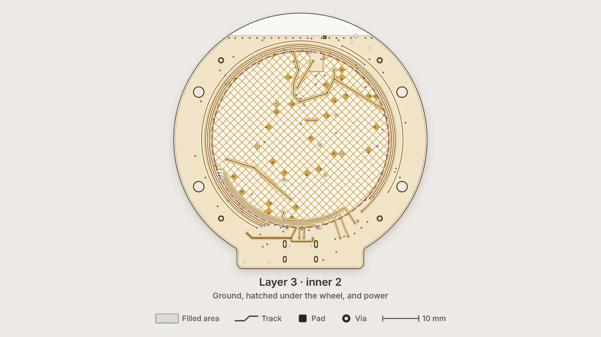
The speakerphone’s four copper layers. The dashed circle marks the touch wheel, where copper electrodes sense the user’s finger. Moving a track from one layer to another requires drilling a hole in the board, and under the touch wheel, that hole would go through an electrode. To avoid this, Claude kept each signal track under the wheel on a single layer, and it chose the chips’ pin assignments so that those tracks wouldn’t need to cross one another. It also kept the area around the Bluetooth antenna (the zigzag at the top) clear of other copper and holes on every layer, so nearby metal wouldn’t weaken its signal.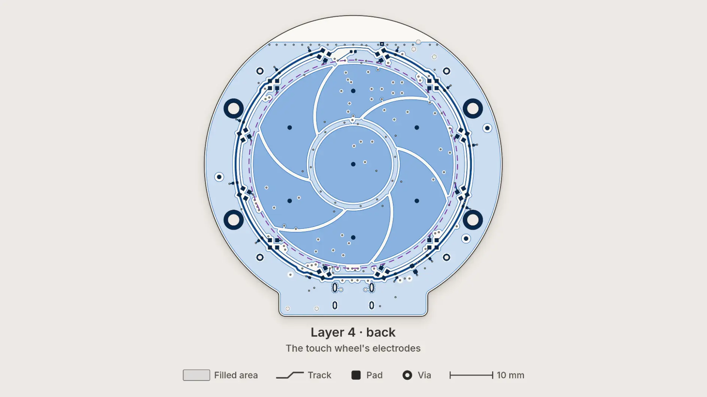
The speakerphone’s four copper layers. The dashed circle marks the touch wheel, where copper electrodes sense the user’s finger. Moving a track from one layer to another requires drilling a hole in the board, and under the touch wheel, that hole would go through an electrode. To avoid this, Claude kept each signal track under the wheel on a single layer, and it chose the chips’ pin assignments so that those tracks wouldn’t need to cross one another. It also kept the area around the Bluetooth antenna (the zigzag at the top) clear of other copper and holes on every layer, so nearby metal wouldn’t weaken its signal.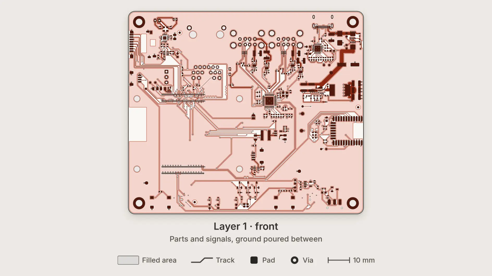
The voice-assistant hub’s four copper layers. Claude added two areas of grounded copper to the power layer (green), directly behind most of the tracks on the back of the board that carry high-speed signals. This gives the signals a nearby return path, which helps reduce interference.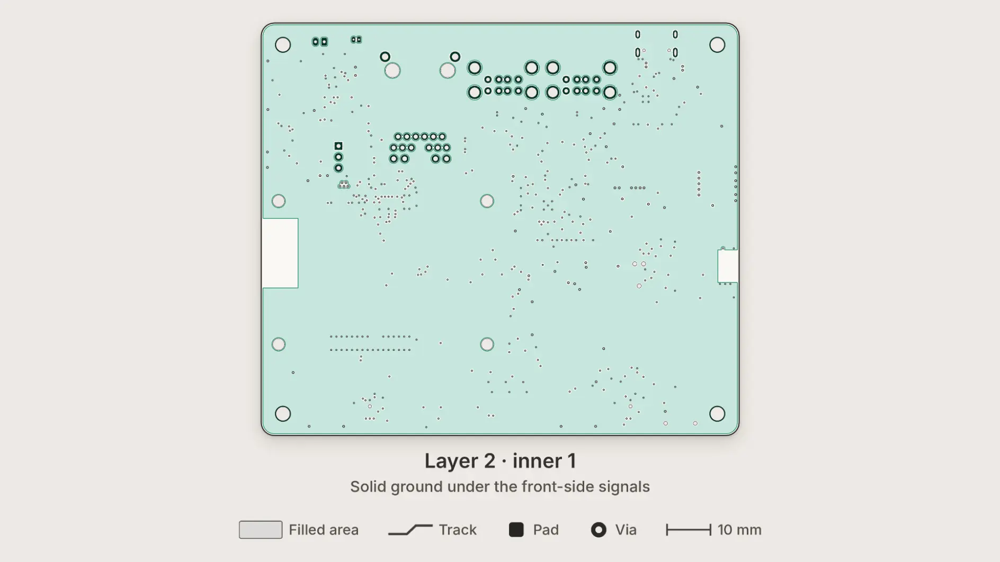
The voice-assistant hub’s four copper layers. Claude added two areas of grounded copper to the power layer (green), directly behind most of the tracks on the back of the board that carry high-speed signals. This gives the signals a nearby return path, which helps reduce interference.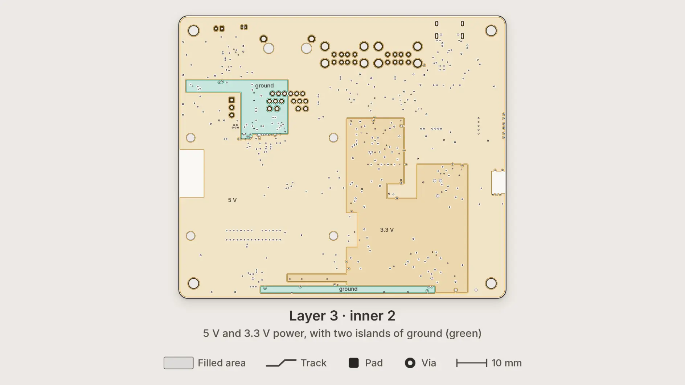
The voice-assistant hub’s four copper layers. Claude added two areas of grounded copper to the power layer (green), directly behind most of the tracks on the back of the board that carry high-speed signals. This gives the signals a nearby return path, which helps reduce interference. The voice-assistant hub’s four copper layers. Claude added two areas of grounded copper to the power layer (green), directly behind most of the tracks on the back of the board that carry high-speed signals. This gives the signals a nearby return path, which helps reduce interference.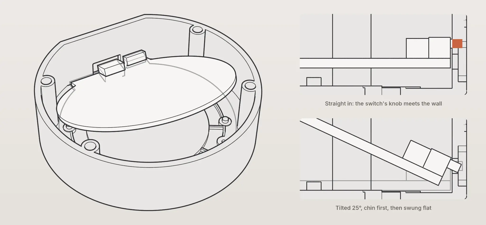
The speakerphone’s circuit board can’t be lowered straight into the enclosure, because the mute switch’s knob would hit the back wall (red). Claude worked out how to install the board by tilting it about 25 degrees and then swinging it flat, and added this step to the assembly instructions.Limitations and next steps
All three of these devices are still prototypes: they haven’t been through electrical validation, antenna tuning, thermal testing, or certification, and they weren’t designed for mass production. Since Claude wasn’t connected to test equipment or to the machines that make and assemble circuit boards, engineers at Diode had to physically build and test the prototypes. Even so, over the past year, Claude has improved substantially at reasoning through decisions about component placement and routing, and it can now design electronics with minimal human guidance and help people build the prototypes. Other models are making progress here, too: OpenAI recently wrote about using its models to design a handheld device. Work like this could help engineers build and test new hardware designs faster. Next, we plan to investigate whether Claude can design denser, faster, and more complex boards, check them in simulation, and learn from measurements taken on the finished devices.
Footnotes
01 Anthropic has a commercial relationship with Diode. 02 This was one of the few instances where the Diode team prompted Claude (“Will it work if there is no battery?”). Overall, their prompting was minimal and limited to short directives (e.g., “clean up the schematic” and “continue”).
Authors & acknowledgements
Acknowledgements
This post is a collaboration between researchers and engineers at Anthropic, including Mike Cretella, Connor Jennings, and Brent Yi, and Craig Chen and the team at Diode Computers. Anthropic has worked with Diode electrical engineers on PCB design since 2025. Editorial support from Xander Balwit, Tom Chivers, Rebecca Hiscott, and Caitlin Love.